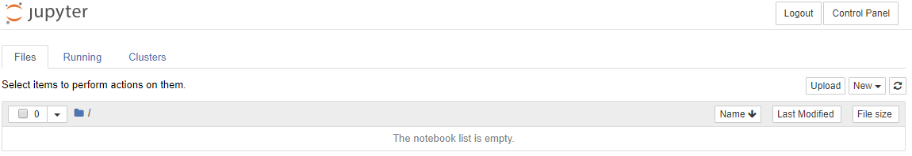

Google Authentication
Now that we have JupyterHub running as a system service and we can log onto JupyterHub with the local PAM authenticator (regular Linux usernames and passwords), we are going to get into the weeds of getting the Google authenticator to work.
- Google Authentication
- Why Google OAuth?
- Google OAuth Instance
- Pull out the client ID and client secret from the downloaded json file
- Add the json file to .gitignore
- Move the json file to the server
- Install the OAuthenticator package on the server
- Modify jupyterhub_config.py
- Restart JupyterHub and Login
- Summary
- Next Steps
Why Google OAuth?
Why Google authenticator instead of local PAM authentication? Our college uses the Gmail suite for both staff and students. When students log onto their college email, they are logging into Gmail. Students can use Google Calendar and Google Drive with their college email account as well. So it would be convenient for students log into JuypterHub using the same Google login they use to access their college email, Google Drive and Calendar.
It's just going to take a bit of work to get there.
Google OAuth Instance
To allow students to use Google usernames and passwords to log into JupyterHub, the first thing we need to do is set up a Google OAuth instance. I set up a Google OAuth instance using my personal Gmail account, rather than my college Gmail account. Some parts of the Google Apps Suite are not available in my college profile, like YouTube and developer tabs.
To obtain the Google OAuth credentials, log into the Google API console https://console.developers.google.com/ and select [Credentials] on the lefthand menu.

Next, we'll create a new OAuth credential under [Credentials] → [Create Credentials] → [OAuth client ID]:

Create a set of Google OAuth credentials using the following input:
- Authorized JavaScript origins:
https://mydomain.org - Authorized redirect URIs:
https://mydomain.org/hub/oauth_callback

After creating a new set of Google OAuth credentials, note the:
- client ID
- client secret

The client ID and client secret strings will be included in our revised JupyterHub configuration.
Note
In a previous JupyterHub deployment, I had trouble creating OAuth credentials in Google's developer console. The description of the problem and the solution is below. Note that in this deploymnet of JupyterHub, I am re-using a domain name, so this specific problem didn't crop up.
After clicking [Create] a problem surfaced. The Google OAuth dashboard noted that:
Invalid Origin: domain must be added to the authorized domains list before submitting
Click the [authorized domains list] link and enter the domain name for the JupyterHub server in the text box under [Authorized domains].
Then click [Submit for verification] and [Save]. For some reason the authorize domains submit for verification step and save step took a couple tries and more than a couple minutes. I don't know if Google is doing a DNS lookup or what kind of verification steps they do - either way it took some time for the domain to be "verified".
Once the domain is verified, go back to the [Credentials] → [Create Credentials] → [OAuth client ID] screen and try entering in the [Authorized JavaScript origins] and [Authorized redirect URIs] again.
The scary red [Invalid Origin] should be absent as long as the domain has been verified.
Pull out the client ID and client secret from the downloaded json file
For this JupyterHub deployment, I also downloaded the .json file that contains the client ID and client secret from Google's OAuth dashboard. You can access the .json file containing the client ID and client secret by clicking the [Credentials] tab and find the credential you just created. On the right hand side is a download icon. Clicking this icon downloads the .json file that contains our client ID and client secret.
After the .json file downloads, you can open the .json file in a web browser or a code editor. It has a structure that looks like this:
{
"web": {
"client_id": "XXXXXXXXXXXXXXXXXXXXXXXXXXXX.apps.googleusercontent.com",
"project_id": "intense-agency-89620",
"auth_uri": "https://accounts.google.com/o/oauth2/auth",
"token_uri": "https://oauth2.googleapis.com/token",
"auth_provider_x509_cert_url": "https://www.googleapis.com/oauth2/v1/certs",
"client_secret": "XXXXXXXXXXXXXXXXXXXXXXXXXXXXXX",
"redirect_uris": [
"https://mydomain.org/hub/oauth_callback"
]
}
}
On a local computer, rename the json file to google_oauth_credentials.json. We can use Python and the json module from the Standard Library to pull out the "client_id" and "client_secret" from the json file. Make sure the json file is in the same directory on your local computer where the Python code is run.
Try the following Python code on your local computer:
with open('google_oauth_credentials.json') as f:
google_oauth = json.load(f)
print(google_oauth['web']['client_id'])
print(google_oauth['web']['client_secret']
The output will be the 'client_id' and 'client_secret' from the json file.
Add the json file to .gitignore
Now we need to move the google_oauth_credentials.json to the sever, but before we do:
MAKE SURE TO ADD THE FILE TO .gitignore !!! WE DON'T WANT PRIVATE CREDENTIALS STORED ON GITHUB !!!.
Warning
Important! Do not save private credentials in a public GitHub repository! Keep your credentials private!
In .gitignore on my local machine, I added the following lines at the end. Note that locally this file is saved at projectroot/etc/jupyterhub/google_oauth_credentials.json
# .gitignore
...
## Config files
/etc/jupyterhub/college_id.json
/etc/jupyterhub/google_oauth_credentials.json
...
Move the json file to the server
Now move the .json file over to the server and save it in the /etc/jupyterhub/ directory. I used FileZilla to move the json file over to the server instead of using copy-paste into PuTTY and the nano code editor.
Open FileZilla and select [File] → [Site Manager... ]. Enter in the server's IP address and select the SSH key used to log into the server. Make sure to select:
- [Protocol:]
SFTP - SSH File Transfer Protocol - [Host:]
IP address of server - [Port]:
22 - [Logon Type:]
Key file - [User:]
peter(or your non-root sudo user on the server) - [Key file:] [Browse...] and find the SSH key used to log onto the server
Click [Connect] to connect to the server with FileZilla.
Move both file browsers to /etc/jupyterhub. On the local computer, the .json file is present. On the server, only the jupyterhub_config.py file is present.
Drag the .json file over to the server side of the window.
Now that the .json file is saved on the server, you can close the FileZilla window.
After the .json file is saved on the server, the contents of /etc/jupyterhub on the server should be:
/etc/jupyterhub/
├── google_oauth_credentials.json
└── jupyterhub_config.py
Let's also build a college_id.json file that contains our college domain and college name. We can pull these strings out with Python's json module too.
The college_id.json file has the format below:
{
"domain": "mycollege.edu",
"name": "My College Name"
}
We can pull out the "domain" and "name" from college_id.json with the following Python code:
with open('/etc/jupyterhub/college_id.json') as f:
college_id = json.load(f)
c.LocalGoogleOAuthenticator.hosted_domain = college_id['domain']
c.LocalGoogleOAuthenticator.login_service = college_id['name']
Move the college_id.json file onto the server with FileZilla.
After the files are moved over, you should be able to see a couple files in the /etc/jupyterhub directory on the server.
$ cd /etc/jupyterhub
$ ls
college_id.json jupyterhub.sqlite
google_oauth_credentials.json jupyterhub_config.py
Install the OAuthenticator package on the server
Before our JupyterHub server can use Google authentication, we first need to install the OAuthenticator Python package on the server.
$ sudo apt-get update
$ sudo apt-get upgrade
$ conda activate jupyterhubenv
(jupyterhubenv)$ pip install oauthenticator
Modify jupyterhub_config.py
Once we get our Google OAuth credentials uploaded onto the server, and we have installed the oauthenticator package, we need to edit jupyterhub_conf.py again. Note how the google_oauth_credentials.json and college_id.json files are used in the configuration and how the json module is imported at the top.
# /etc/jupyterhub/jupyterhub_config.py
# used to read the json google oauth config file
import json
# For Google OAuth
from oauthenticator.google import LocalGoogleOAuthenticator # $ pip install oauthenticator
c = get_config()
c.JupyterHub.log_level = 10
c.Spawner.cmd = '/opt/miniconda3/envs/jupyterhubenv/bin/jupyterhub-singleuser'
# Cookie Secret Files
c.JupyterHub.cookie_secret_file = '/srv/jupyterhub/jupyterhub_cookie_secret'
c.ConfigurableHTTPProxy.auth_token = '/srv/jupyterhub/proxy_auth_token'
# Google OAuth Login
c.JupyterHub.authenticator_class = LocalGoogleOAuthenticator
with open('/etc/jupyterhub/google_oauth_credentials.json') as f:
google_oauth = json.load(f)
c.LocalGoogleOAuthenticator.client_id = google_oauth['web']['client_id']
c.LocalGoogleOAuthenticator.client_secret = google_oauth['web']['client_secret']
c.LocalGoogleOAuthenticator.oauth_callback_url = google_oauth["web"]["redirect_uris"][0]
c.LocalGoogleOAuthenticator.create_system_users = True
c.Authenticator.add_user_cmd = ['adduser', '-q', '--gecos', '""', '--disabled-password', '--force-badname']
with open('/etc/jupyterhub/college_id.json') as f:
college_id = json.load(f)
c.LocalGoogleOAuthenticator.hosted_domain = [college_id['domain']] # replace with mycollege.edu, must be a list of strings
c.LocalGoogleOAuthenticator.login_service = college_id['name'] # replace with 'My College Name'
## Extra Configuration
# Maximum number of concurrent servers that can be active at a time
c.JupyterHub.active_server_limit = 26
# Maximum number of concurrent users that can be spawning at a time
c.JupyterHub.concurrent_spawn_limit = 13
# Whether to shutdown the proxy when the Hub shuts down.
c.JupyterHub.cleanup_proxy = True
# Whether to shutdown single-user servers when the Hub shuts down.
c.JupyterHub.cleanup_servers = True
## Users
c.Authenticator.admin_users = {'peter','peter.kazarinoff'}
This little line:
c.Authenticator.add_user_cmd = ['adduser', '-q', '--gecos', '""', '--disabled-password', '--force-badname']
was a real gottacha! Our college email addresses are in the form:
firstname.lastname@college.edu
When a student logs in, JupyterHub tries to create a new Linux user with a dot . in their username. Usernames with . doesn't work on Linux. I tried to create a new Linux user with a dot in their username, and the terminal asked me to use the --force-badname flag. So --force-badname is what we'll add to the c.Authenticator.add_user_cmd list. Otherwise, users (students) will be able to authenticate with Google, but they won't get a new user account on the server, and they won't be able to run notebooks or Python code.
Restart JupyterHub and Login
Restart JupyterHub and browse to the web address attached to the server.
$ sudo systemctl stop jupyterhub
$ sudo systemctl start jupyterhub
$ sudo systemctl status jupyterhub
# [Ctrl + c] to exit
● jupyterhub.service - JupyterHub
Loaded: loaded (/etc/systemd/system/jupyterhub.service; disabled; vendor preset: enabled)
Active: active (running) since Fri 2019-02-08 18:42:23 UTC; 6s ago
Main PID: 9178 (jupyterhub)
Tasks: 8 (limit: 1152)
If JupyterHub is running OK and there were no errors after the revisions to the jupyterhub_config.py file, open a web browser and try to Log in.
The login window should now look something like:

We can log in with our Google user name and password (college username and password).
Pretty sweet!
Note the Jupyter notebook file browser is empty after we log on. A new user was created by JupyterHub when we logged in. This new user's home directory is empty.

If you added your college username was added to the c.Authenticator.admin_users = { } set in jupyterhub_config.py, you will be able to see an [Admin] tab when you click [Control Panel] in the Jupyter notebook file browser. If you click [Admin], you should see three users in the user list.

In the admin screen, you can shut down the individual notebook servers and logout.
After we log in using our college username and password, we can see if JupyterHub created a new user (with our college username) on the server.
The command below produces a long list of users. This long list contains the non-root sudo user peter and the Google authenticated user (college username).
$ awk -F':' '{ print $1}' /etc/passwd
....
uuidd
dnsmasq
landscape
sshd
pollinate
peter
gabby
peter.kazarinoff
Summary
This was a big section and we got a lot accomplished. At the end of it, we have a running JupyterHub server that allows students and faculty to log into JupyterHub using their college useranmes and passwords. We accomplished this in a couple steps:
- Create a Google OAuth instance in the Google Developer's console. Download and save the .json file that stores the client ID and client secret.
- Figure out how to pull the client ID and secret out of the .json file using Python's json module from the Python Standard Library.
- Add the .json file to .gitignore so that our private client ID and private client secret are not made public.
- Move the .json file over to the server with FileZilla.
- Create a
college_id.jsonfile and move it over to the server with FileZilla. - Modify the
jupyterhub_config.pyfile. Add Google authentication to our JupyterHub configuration. - On the server,
pipinstall oauthenticator into the virtual environment that runs JupyterHub. - Restart JupyterHub and login with a Google username and password.
- Use the JuputerHub admin and the terminal to see the new user JupyterHub created.
Next Steps
The next step is to make the login screen look like our college login screen. Right now, students see a orange button on the login screen. Next, we'll mess around with some templates, html and css to get our JupyterHub login screen to look a lot more like our college login screen.